Dashboard implementation example¶
Here’s an example of a Dashoboard set up:

Under Usage, information about active readers and active contributors are shown. What should be considered an active reader or an active contributor is defined in the Metrics settings, see: Metric Settings
Under Page Status, the following is availble:

A number of tabs are available. What you see in the example is the total status for the tenant. You can choose to see status for just one of the publishing apps. Besides that number of lists has been set up; Most Visited (All), Most Visited (Last month), Underused Pages and Statistics.
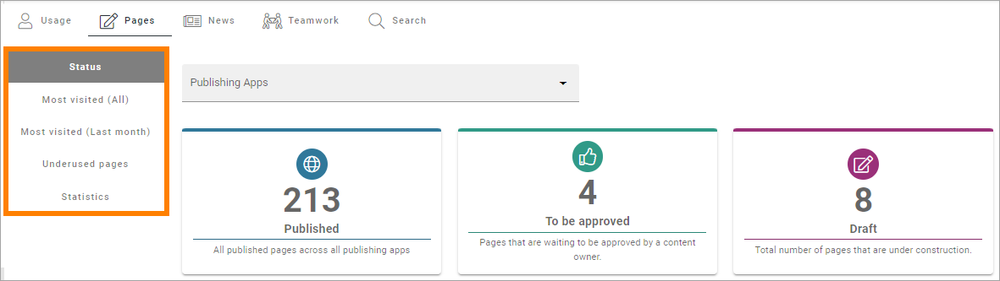For Underused Pges, something like the following can be shown:

What should be considered underused content is defined in the Metrics settings, see link above.
Note the list to the right, of pages that has npt been vsitied for a very long time. For more information on the lists, see below.
For News, this has been set up:
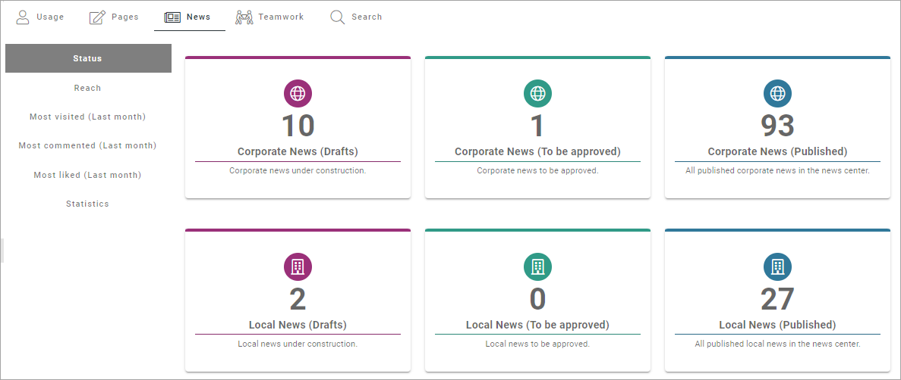Besided Status for news pages, a number of lists is available; Reach, Most Visited (Last month), Most Commented (Last month), Most Liked (Last month) and Statsitics:

Regarding Reach: How well we reach our target audience based on what we expect. The metric can be configured to a specific scope of pages (for example News pages) and have a target number of users. For nmore information on the lists, see below.
For Teamwork, you can see the number of active teamworks and if any has been created this week or this month:

In the image above, status for all Teamwork Templates are shown. You can also choose to see the status for just one of the templates, meaning all teamworks created from a certain template.
Finally, in this example, status for searches made by users can be shown:

How it’s done¶
The basic layout in this implementation example is a tab section with six tabs:

The settings for the tabs are similar. Here’s the first tab as an example:

For Style, “Show Active Slider” is selected so it’s clear which the active tab is:
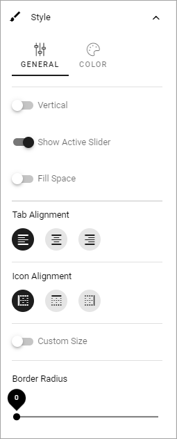Usage settings¶
On this tab a Metrics block is placed, with the following settings:
Scope is set to “User Activity”:
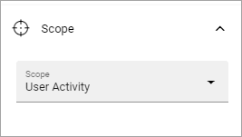The following Metrics are set up:
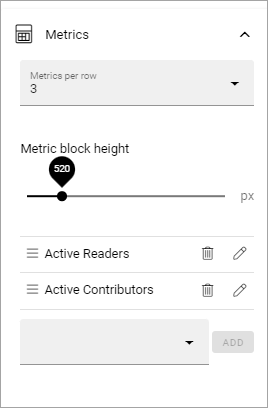Pages settings¶
For Pages, a section is added, and the following tabs are set up there:
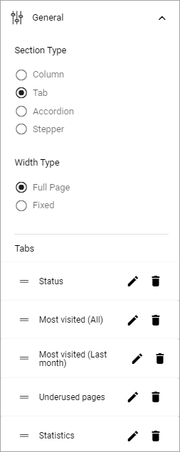The settings for the tabs are similar to those for Usage, see above.
On the Status tab, a Metrics block is placed with the following setting for Scope:
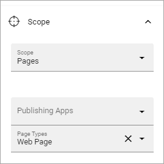And the following settings for Metrics:

Most Visited (All) is a Page Rollup block, with the following settings for query:
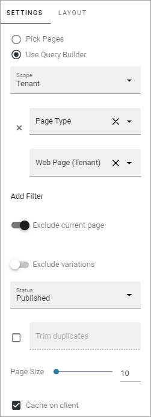The Display is List View with the these settings:
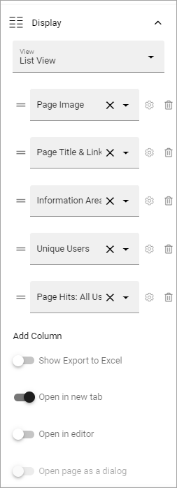and these:

Here’s an example of the list:
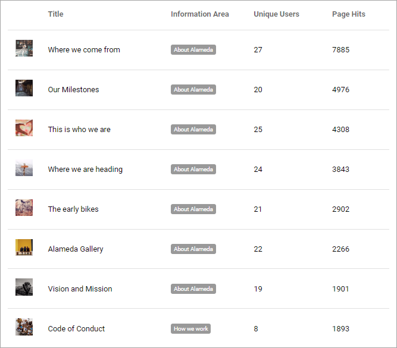Most Visited (Last month) has similar settings, but of course showing the last month only. Here’s an example:
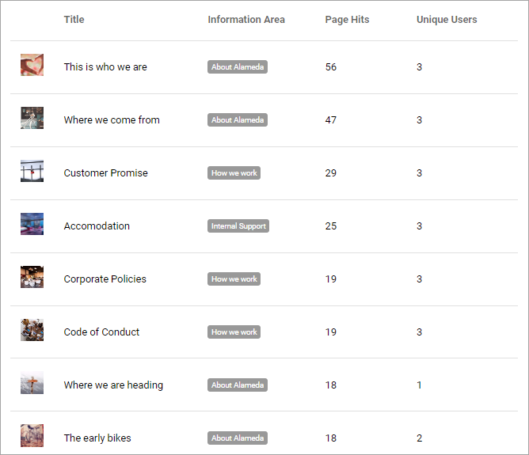Underused Pages is placed in a section with two tabs:
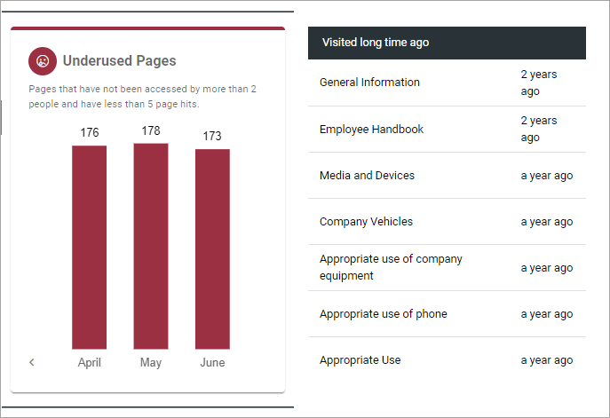The settings for the tabs are these:

On the tab to the left, there’s a Metrics block, with the following settings for Scope:

And the following Metrics:
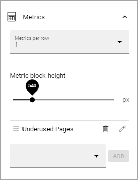To the right, a Page Rollup block is used to list the pages that has not been visited for a very long time, listing all pages with List View Display and two columnms, with the follwing sorting:

News settings¶
News is organized in a section with five tabs:

Status for News is set up with a Metrics block, with the following Scope:
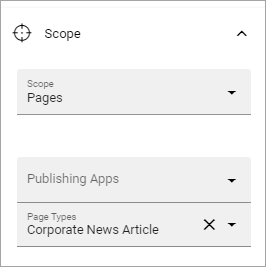And the following Metrics:
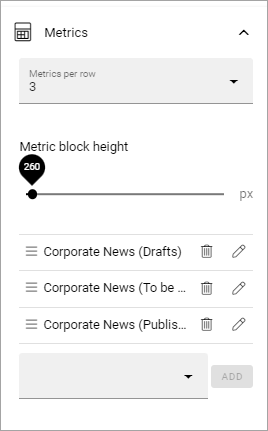The Reach tab is set up with two Metrics blocks, one for Corporate News and the other for Local News:

Scope and Metrics for Corporate News are these:
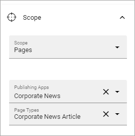
Scope and Metrics for Local News are these:
 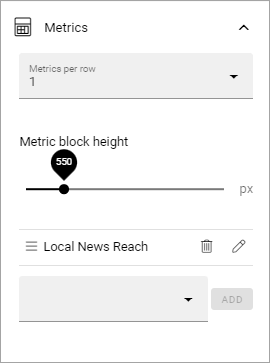
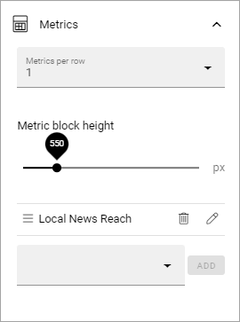
Most Visited news last month is set up with a Page Rollup block with this query:

The Display is List View with the following columns:

Sorting is by Page Hits: All users, and the Time Period is set to One month from today.
Here’s an example of that list:
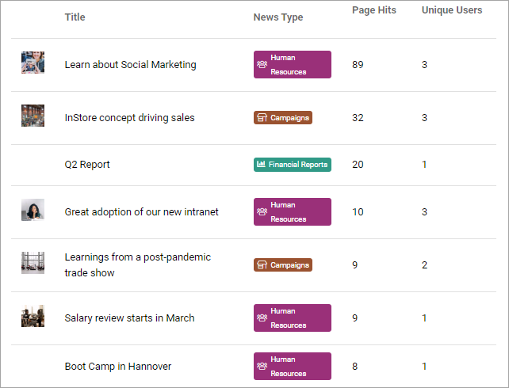Most Commented (Last month) and Most Liked (Last month) are set up in a similar way:
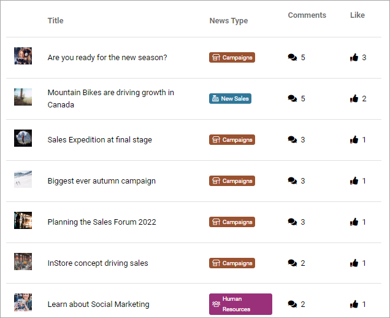
They have both this set of columns (although in a different order):
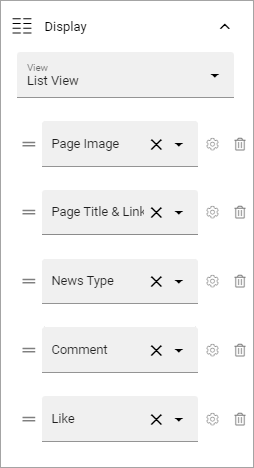The two lists are differently sorted, the first on Comments and the second on Likes.
Finally, Statistics is a tab that can be used to se statistics for different types of news and during different time periods:

Note the possibility to export the shown list to Excel.
The following Query is set:
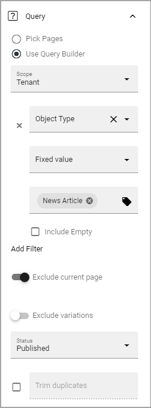The following settings are used for Display:

and these:

Filters are set up this way:
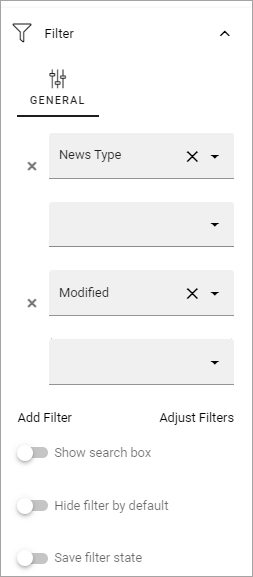(No settings for Time Period).
Teamwork settings¶
For this tab, the Scope is set to “Teamwork”, with six Metrics:
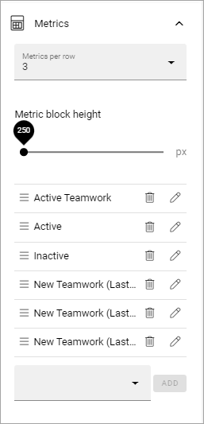A filter is also added so users can choose the type of teamwork, based on template:

Search settings¶
The Searech tab is set up with a Metrics block, with the folowing Scope:
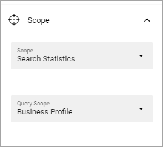And the following Metrics: